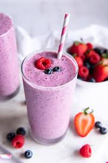

How to Make a Berry Smoothie

Not meeting your fruit and fiber goals? This smoothie will get things moving and YOU back on track.
Frozen fruit works best for this recipe. If you choose to use fresh fruit, add 1 cup of ice before blending.
Ingredients:
- 1 cup frozen mixed berries
- 1/2 cup unsweetened almond milk
- 2 tsp chia seeds and flax seeds
- 1 tbsp semi-sweet chocolate chips (optional)
- large handful spinach
Steps:
- Put all ingredients into the blender.
- Blend.
- Garnish with a cute straw and enjoy!